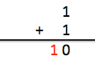
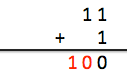

前言¶
进制¶
在计算机中，所有的程序都是以二进制的方式进行存储的，我们看到的数字其实是用十进制显示出来的。
对于任何一种进制---X进制，就表示某一位置上的数运算时是逢X进一位。十进制是逢十进一，十六进制是逢十六进一，二进制就是逢二进一，以此类推，x进制就是逢x进位。
编程中常见的进制有4种：
- 十进制
- 二进制
- 八进制
- 十六进制
也就是说，同一个整数，我们至少有4种表示方式。
十进制¶
十进制是我们最熟悉、最常用的一种计数方式，它有两个特点：由0、1、2….9十个基本数字组成。
运算规则是
逢十进一
- 运算
所谓逢十进一，也就是当数值满十时，就要向前进一位

个位数为9+1，满十了，十位数就进一。
二进制¶
二进制是计算机内部使用的一种计数方式，它有两个特点：由0、1两个基本数字组成；
运算规则是
逢二进一
如果有人问：为什么二进制里面没有2~9这些数字呢？你就告诉他，二进制是逢二进一，因此当数字满二的时候就会进位。
通常二进制是以0b或者0B开头的，比如0b1010是个二进制数，而1010则还是我们熟悉的十进制数，就是一千零一十
- 运算
比如1+1

个位数是1+1，值满2了，于是十位数要进1。
因此，在二进制中：1 + 1 = 0b10，这里的0b10表示的是十进制中的2，并不是10
以此类推，11 + 1 = 0b100

二进制转为十进制¶
进制里面有个基数的概念，基数是用来计算数值的，比如十进制的基数是10，因此十进制是这样算数的：
12345 = 5 * 10(0) + 4 * 10(1) + 3 * 10(2) + 2 * 10(3) + 1 * 10(4) = 5 + 40 + 300 + 2000 + 10000 = 12345
二进制的基数是2，以此类推：
0B1011 = 1 * 2(0) + 1 * 2(1) + 0 * 2(2) + 1 * 2(3) = 1 * 1 + 1 * 2 + 0 * 4 + 1 * 8 = 1 + 2 + 0 + 8 = 11
因此二进制数0B1011表示的数值是十进制中的11
八进制¶
八进制有两个特点：由0~7八个基本数字组成；
运算规则是
逢八进一
- 细节
由于十进制和八进制中都包含了0~7，为了区分开来，在书写八进制数的时候，需要在前面加个0。比如076是个八进制数，76则是个十进制数。
- 运算

个位数是7+1，值满八了，于是十位数要进一。因此，在八进制中，7 + 1 = 010。010则表示十进制中的八，而不是十
八进制转十进制¶
八进制的基数是8，因此027计算出来就是十进制中的23
027 = 7 * 8(0) + 2 * 8(1) = 7 * 1 + 2 * 8 = 23
二进制转八进制¶
不难发现一个十进制数可以表示的最大值是9，而一个八进制数可以表示的最大值是7，恰好3个二进制数可以表示的最大值0b111也是7。因此，我们可以用一个八进制数来代替3个二进制数。
0b11110011 = 0b 011 110 011 = 0363
如果是八进制转为二进制，那就反过来，用3位二进制数来表示1位八进制数
025 = 0b 010 101 = 0b10101
十六进制¶
十六进制有两个特点：由0~9和A~F组成，A~F分别表示10~15；
运算规则是
逢十六进一
- 细节
由于十进制、八进制、十六进制中都包含了0~7，为了区分开来，在书写十六进制数的时候，需要在前面加个0x或者0X。比如0x76是个十六进制数，076是个八进制数，76则是个十进制数。
- 运算

个位数是B+5，也就是11+5，值满十六了，于是十位数要进一。因此，在十六进制中，B + 5 = 0x10。0x10则表示十进制中的“十六”，而不是“十”
十六进制转十进制¶
十六进制的基数是16，F表示十进制中的15，因此0x2F计算出来就是十进制中的47
0x2F = 15 * 16(0) + 2 * 16(1) = 15 * 1 + 2 * 16 = 47
二进制转十六进制¶
一个十六进制数可以表示的最大值是15，恰好4个二进制数可以表示的最大值0b1111也是15。因此，我们可以用一个十六进制数来代替4个二进制数。
0b11110011 = 0b 1111 0011 = 0xF3
如果是十六进制转为二进制，那就反过来，用4位二进制数来表示1位十六进制数
0x25 = 0b 0010 0101=0b100101
小结¶
一个整数99的4种表示方式分别如下：
十进制：99
二进制：0b1100011
八进制：0143
十六进制：0x63
c语言中的代码为
#include <stdio.h>
int main(void)
{
int i = 99; // 十进制
int j = 0b1100011; // 八进制
int k = 0x63; // 十六进制
// C语言里没有二进制数的表示方法
printf("%d \n", i);
printf("%d \n", j);
printf("%d \n", k);
return 0;
}
- 使用printf进行输出
| 格式符 | 功能 |
|---|---|
%d |
以带符号的十进制形式输出整数 |
%o |
以不带符号的八进制形式输出整数 |
%x |
以不带符号的十六进制形式输出整数 |
%u |
以不带符号的十进制形式输出整数 |
- 二进制、十进制、十六进制对应关系